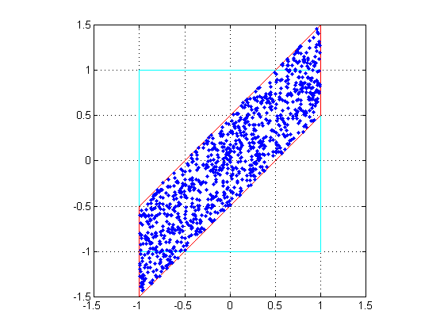
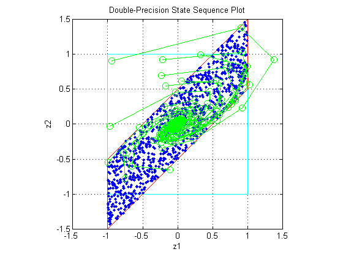
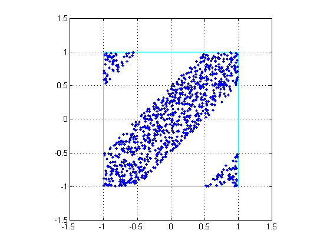
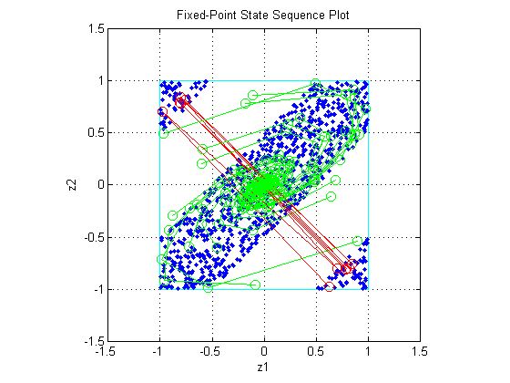
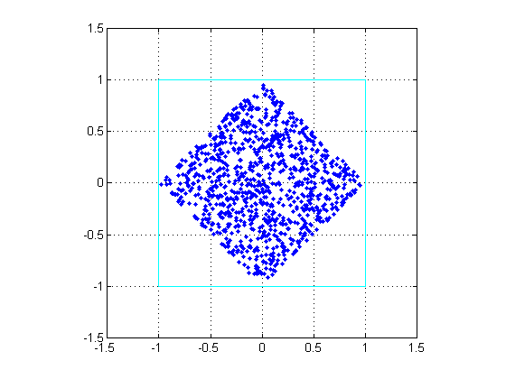
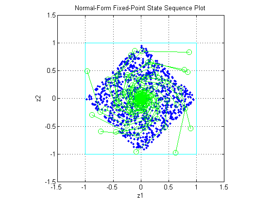

リミット サイクルを使用した固定小数点の状態空間システムの解析
これは、有限精度を使用して実装した場合の 2 次型再帰システムのための状態空間表現を使用したリミット サイクル検出ルーチンのデモです。
このデモでは、ゼロ入力によるオーバーフローのために行う大規模なリミット サイクル検出や、そのような振動を防ぐのに十分な条件を主に取り上げます。
参考文献:
[1] Richard A. Roberts and Clifford T. Mullis, "Digital Signal Processing", Addison-Wesley, Reading, Massachusetts, 1987, ISBN 0-201-16350-0, Section 9.3.
[2] S. K. Mitra, "Digital Signal Processing:A Computer Based Approach", McGraw-Hill, New York, 1998, ISBN 0-07-042953-7.
目次
システムの状態空間表現の選択
状態変換行列 A の固有値の振幅が 1 より小さいことを確認することにより、システムが安定していることを確認します。
format A = [0 1; -.5 1]; B = [0; 1]; C = [1 0]; D = 0; eig(A)
ans = 0.5000 + 0.5000i 0.5000 - 0.5000i
フィルター実装
type fisisostatespacefilter.m
function [y,z] = fisisostatespacefilter(A,B,C,D,x,z) %FISISOSTATESPACEFILTER Single-input, single-output statespace filter % [Y,Zf] = FISISOSTATESPACEFILTER(A,B,C,D,X,Zi) filters data X with % initial conditions Zi with the state-space filter defined by matrices % A, B, C, D. Output Y and final conditions Zf are returned. % Copyright 2004 The MathWorks, Inc. % $Revision: 1.1.4.2.2.1 $ y = x; z(:,2:length(x)+1) = 0; for k=1:length(x) y(k) = C*z(:,k) + D*x(k); z(:,k+1) = A*z(:,k) + B*x(k); end
浮動小数点フィルター
浮動小数点フィルターを作成し、状態の軌跡を観察します。
まず、単位正方形内でランダム状態を選択して、状態変換行列 A によって乗算された 1 ステップの後でそれらがどこに投影されるかを観察します。
rand('state',0); clf x1 = [-1 1 1 -1 -1]; y1 = [-1 -1 1 1 -1]; plot(x1,y1,'c') axis([-1.5 1.5 -1.5 1.5]); axis square; grid; hold on % Plot the projection of the square p = A*[x1;y1]; plot(p(1,:),p(2,:),'r') r = 2*rand(2,1000)-1; pr = A*r; plot(pr(1,:),pr(2,:),'.')
時間経過に伴うランダム初期状態
入力がすべてゼロの、単位正方形内にあるように正規化されたランダム初期状態のフィルターを駆動して、フィルター処理を実行します。
状態によっては、単位正方形の外側に出るものもあり、最終的にそれらは原点 z=[0;0] でゼロ状態となります。
x = zeros(10,1); zi = [0;0]; q = quantizer([16 15]); for k=1:20 y = x; zi(:) = randquant(q,size(A,1),1); [y,zf] = fisisostatespacefilter(A,B,C,D,x,zi); plot(zf(1,:), zf(2,:),'go-','markersize',8); end title('Double-Precision State Sequence Plot'); xlabel('z1'); ylabel('z2')
状態軌跡
固有値の振幅が 1 より小さいため、システムは安定しており、すべての初期状態はゼロ入力の原点となります。しかし、状態が縮小され始める前にまず外側に投影されたこの例のように、固有値によって状態の軌跡のすべてがわかるわけではありません。
A の特異値により、全体的な状態軌跡がより明確になります。最大の特異値は約 1.46 で、これは対応する特異ベクトルに整合された状態が原点から投影されることを示しています。
svd(A)
ans =
1.4604
0.3424
固定小数点フィルターの作成
固定小数点フィルターを作成し、リミット サイクルを確認します。
フィルターの MATLAB® コードはそのままです。 それは、固定小数点入力で駆動するため、固定小数点フィルターとなります。
オーバーフロー振動を描くため、オーバーフローになる積データ型と和データ型を選択します。
randn('state',0); F = fimath('OverflowMode','wrap',... 'ProductMode','SpecifyPrecision',... 'ProductWordLength',16,'ProductFractionLength',15,... 'SumMode','SpecifyPrecision',... 'SumWordLength',16,'SumFractionLength',15); A = fi(A,'fimath',F) B = fi(B,'fimath',F) C = fi(C,'fimath',F) D = fi(D,'fimath',F)
A =
0 1.0000
-0.5000 1.0000
DataTypeMode: Fixed-point: binary point scaling
Signedness: Signed
WordLength: 16
FractionLength: 14
RoundMode: nearest
OverflowMode: wrap
ProductMode: SpecifyPrecision
ProductWordLength: 16
ProductFractionLength: 15
SumMode: SpecifyPrecision
SumWordLength: 16
SumFractionLength: 15
CastBeforeSum: true
B =
0
1
DataTypeMode: Fixed-point: binary point scaling
Signedness: Signed
WordLength: 16
FractionLength: 14
RoundMode: nearest
OverflowMode: wrap
ProductMode: SpecifyPrecision
ProductWordLength: 16
ProductFractionLength: 15
SumMode: SpecifyPrecision
SumWordLength: 16
SumFractionLength: 15
CastBeforeSum: true
C =
1 0
DataTypeMode: Fixed-point: binary point scaling
Signedness: Signed
WordLength: 16
FractionLength: 14
RoundMode: nearest
OverflowMode: wrap
ProductMode: SpecifyPrecision
ProductWordLength: 16
ProductFractionLength: 15
SumMode: SpecifyPrecision
SumWordLength: 16
SumFractionLength: 15
CastBeforeSum: true
D =
0
DataTypeMode: Fixed-point: binary point scaling
Signedness: Signed
WordLength: 16
FractionLength: 15
RoundMode: nearest
OverflowMode: wrap
ProductMode: SpecifyPrecision
ProductWordLength: 16
ProductFractionLength: 15
SumMode: SpecifyPrecision
SumWordLength: 16
SumFractionLength: 15
CastBeforeSum: true
固定小数点での四角投影のプロット
再び単位正方形内でランダム状態を選択して、状態変換行列 A によって乗算された 1 ステップの後でそれらがどこに投影されるかを観察します。違いは今回の行列 A は固定小数点である点です。
浮動小数点で以前に四角投影した三角形は四角形内に戻りました。
clf r = 2*rand(2,1000)-1; pr = A*r; plot([-1 1 1 -1 -1],[-1 -1 1 1 -1],'c') axis([-1.5 1.5 -1.5 1.5]); axis square; grid; hold on plot(pr(1,:),pr(2,:),'.')
固定小数点フィルターの実行
今回と前回のコードの唯一の違いは、固定小数点データ型で駆動している点です。
x = fi(zeros(10,1),1,16,15,'fimath',F); zi = fi([0;0],1,16,15,'fimath',F); q = assignmentquantizer(zi); e = double(eps(zi)); rand('state',0); for k=1:20 y = x; zi(:) = randquant(q,size(A,1),1); [y,zf] = fisisostatespacefilter(A,B,C,D,x,zi); if abs(double(zf(end)))>0.5, c='ro-'; else, c='go-'; end plot(zf(1,:), zf(2,:),c,'markersize',8); end title('Fixed-Point State Sequence Plot'); xlabel('z1'); ylabel('z2')
他のランダムに選択された初期状態のためにこれを入力すると、状態が三角形領域の 1 つに入ると別の三角形領域に投影されて行き来し、エスケープすることがないことを示します。
オーバーフローによるリミット サイクルを防ぐのに十分な条件
システム内でのオーバーフローによるリミット サイクルを防ぐのに十分な条件は 2 つあります。
- システムが安定していること、つまり、abs(eig(A))<1
- 行列 A が正規であること、つまり、A'*A = A*A'
現在の表現については、2番目の条件は適用されないことに注意してください。
相似変換を適用して正準型 A を作成
正規状態変換行列 A2 を作成する元のシステムへの相似変換を適用しましょう。
T = [-2 0;-1 1]; Tinv = [-.5 0;-.5 1]; A2 = Tinv*A*T; B2 = Tinv*B; C2 = C*T; D2 = D;
変換されたシステムのシステム伝達関数が以前と同じという結果なら、相似変換によって固有値は保持されます。ただし、変換された状態変換行列 A2 は正規です。
変換システムでのリミット サイクルの確認
正準型システムの四角投影のプロット
これで、単位正方形内のランダム初期状態の投影はすべて均一に縮小しました。これは、状態変換行列 A2 が正規であるためです。また、状態は反時計回りに 90 度回転します。
clf r = 2*rand(2,1000)-1; pr = A2*r; plot([-1 1 1 -1 -1],[-1 -1 1 1 -1],'c') axis([-1.5 1.5 -1.5 1.5]); axis square; grid; hold on plot(pr(1,:),pr(2,:),'.')
状態シーケンスのプロット
前述と同じ初期状態にて再び状態シーケンスをプロットすると、出力が原点に対して螺旋状であることがわかります。
x = fi(zeros(10,1),1,16,15,'fimath',F); zi = fi([0;0],1,16,15,'fimath',F); q = assignmentquantizer(zi); e = double(eps(zi)); rand('state',0); for k=1:20 y = x; zi(:) = randquant(q,size(A,1),1); [y,zf] = fisisostatespacefilter(A2,B2,C2,D2,x,zi); if abs(double(zf(end)))>0.5, c='ro-'; else, c='go-'; end plot(zf(1,:), zf(2,:),c,'markersize',8); end title('Normal-Form Fixed-Point State Sequence Plot'); xlabel('z1'); ylabel('z2')
他のランダムに選択された初期状態のためにこれを入力すると、フィルターが復元できない領域はないことが示されます。